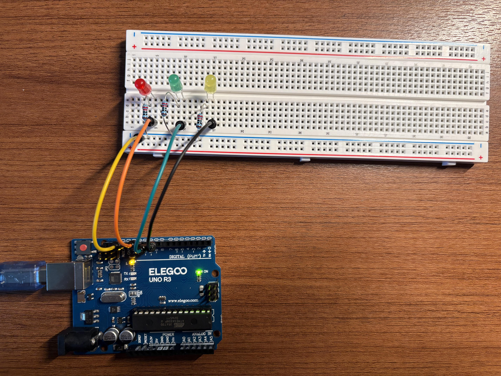
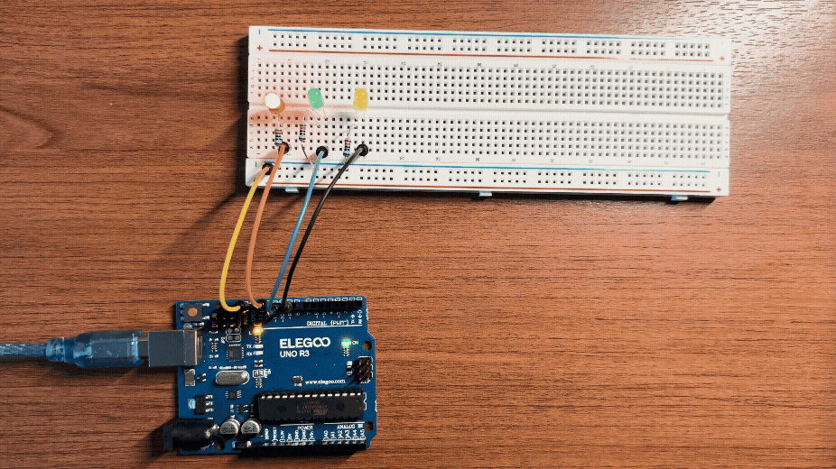
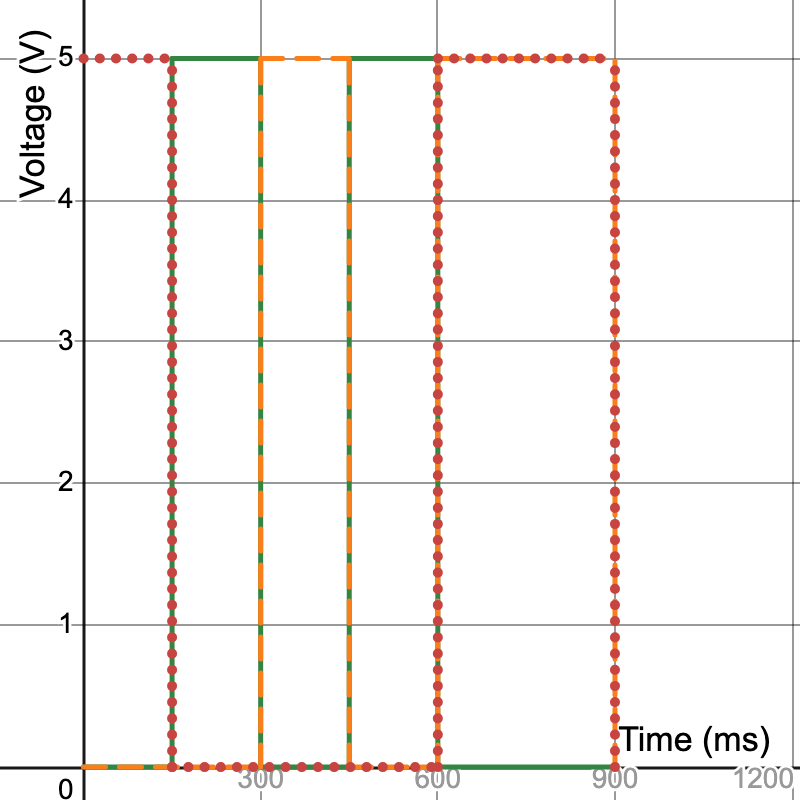

Here is all the documentation for assignment 1!
The circuit connects Arduino digital pins 11, 10, and 9 to three LEDs (Red, Green, Yellow). The anode (longer leg) of each LED connects to its digital pin, and the cathode (shorter leg) connects through a 220Ω current-limiting resistor to GND.
To safely restrict current through the LEDs and protect the Arduino digital pins, resistor values were calculated using Ohm's Law (V = I * R):
Standard 220Ω resistors were chosen for all three LEDs. At 220Ω, maximum current per pin is around 13mA to 14mA, which is well below the Arduino Uno's maximum limit of 40mA per pin.

Breadboard setup showing the Red, Green, and Yellow LEDs wired to digital pins 11, 10, and 9. Each LED connects through a 220Ω resistor to the blue ground rail, which links directly to the Arduino GND pin.
// red led connected to pin 11
int RED_PIN = 11;
// green led connected to pin 10
int GREEN_PIN = 10;
// yellow led connected to pin 9
int YELLOW_PIN = 9;
// setup runs once on start
void setup() {
// set red pin to output mode
pinMode(RED_PIN, OUTPUT);
// set green pin to output mode
pinMode(GREEN_PIN, OUTPUT);
// set yellow pin to output mode
pinMode(YELLOW_PIN, OUTPUT);
}
// loop runs over and over continuously
void loop() {
// turn red on
digitalWrite(RED_PIN, HIGH);
// wait 150ms
delay(150);
// turn red off
digitalWrite(RED_PIN, LOW);
// turn green on
digitalWrite(GREEN_PIN, HIGH);
// wait 150ms
delay(150);
// turn green off
digitalWrite(GREEN_PIN, LOW);
// turn yellow on
digitalWrite(YELLOW_PIN, HIGH);
// wait 150ms
delay(150);
// turn yellow off
digitalWrite(YELLOW_PIN, LOW);
// turn green on
digitalWrite(GREEN_PIN, HIGH);
// wait 150ms
delay(150);
// turn green off
digitalWrite(GREEN_PIN, LOW);
// turn all leds on together
digitalWrite(RED_PIN, HIGH);
// turn green on
digitalWrite(GREEN_PIN, HIGH);
// turn yellow on
digitalWrite(YELLOW_PIN, HIGH);
// hold all on for 300ms
delay(300);
// turn red off
digitalWrite(RED_PIN, LOW);
// turn green off
digitalWrite(GREEN_PIN, LOW);
// turn yellow off
digitalWrite(YELLOW_PIN, LOW);
// pause before repeating the sequence
delay(300);
}
Demonstration of the physical execution of the blinking pattern across the three LEDs on the breadboard.

Graph showing Voltage (0V to 5V) on the Y-axis over Time on the X-axis for each of the 3 LEDs during one sequence cycle. The red dotted line represents the Red LED, the green solid line represents the Green LED, and the orange dashed line represents the Yellow LED.
An Arduino Uno has 14 digital I/O pins (pins 0–13) and 6 analog input pins (A0–A5) that can also function as digital output pins. Excluding pins 0 and 1, which are reserved for serial RX/TX communication, you could control up to 18 LEDs independently. If each LED draws approximately 13mA when using 220Ω resistors, driving 18 LEDs simultaneously would draw:
18 LEDs * 13mA = 234mA total current
I adjusted the delay time in the Arduino code using basic delay() functions and re-uploaded the sketch at varying speeds. I observed that once the delay dropped to around 9ms (a total cycle period of 18ms, or approximately 55.5Hz), my eyes could no longer perceive the individual flashes. At and below 9ms, the flickering completely smoothed out, making the LED appear as a solid, steady beam of light.
I used the AI tool Gemini to assist with structuring the HTML document layout and writing CSS rules for consistent page spacing and formatting.